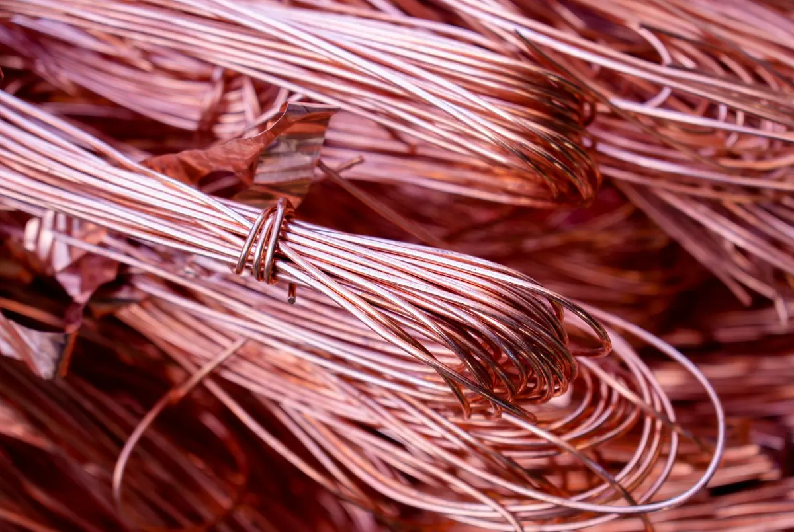

Non-ferrous metal
Copper, aluminium, brass & stainless
Non-ferrous metal recovered from cable, appliances, e-waste and commercial clearances across the Recycle Group, sorted by type and supplied to buyers who need clean, segregated grades.
Streams
What we recover
The group processes mattresses, furniture, electrical goods, cable and commercial waste at scale. Non-ferrous metal is recovered from those streams, segregated by type and accumulated to saleable lots.
Copper
Copper recovered from cable and electrical goods, including granulated copper from our cable processing.
Aluminium
Aluminium from appliances, frames, extrusions and commercial fit-out clearances.
Brass
Brass fittings, valves and hardware recovered from plumbing, appliances and building strip-outs.
Stainless steel
Stainless from commercial kitchens, appliances and equipment, kept separate from the ferrous line.

Cable
From cable to clean copper
Cable is one of the highest-value streams that arrives at the facility — and one of the easiest to get wrong. Burnt or poorly stripped cable loses value and creates a compliance problem.
We granulate cable mechanically, separating the copper from the insulation so that what we supply is clean metal, not a mixed product that the buyer has to reprocess.
- Mechanical granulation — no burning
- Copper separated from insulation on site
- Accumulated to lots and supplied by weight

How we supply
Segregated, weighed, documented
Non-ferrous is sold by type and by weight, with the source stream identified. Lots are accumulated until a commercial quantity is available, then offered to buyers in Australia or packed for export alongside our ferrous product.
If you buy a particular grade regularly, tell us. We can set aside a stream and let you know when a lot is ready rather than offering it to the open market.
Register your interestHave a stream?
We take non-ferrous in, too
Manufacturers, electricians, demolition contractors, councils and recyclers with a consistent non-ferrous stream can supply Reforge Metals directly. We are interested in cable, copper, aluminium, brass and stainless in commercial quantities.
Buying or supplying non-ferrous?
Tell us which metals, where you are and the volumes involved. We will come back with what is available or what we can take.